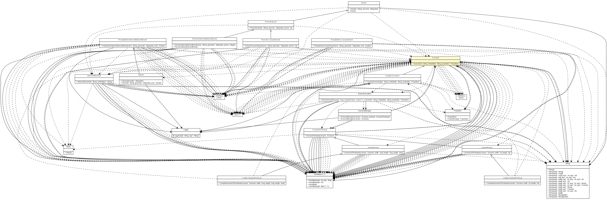

es.upm.dit.gsi.shanks.model.scenario
Class Scenario

java.lang.Object
 es.upm.dit.gsi.shanks.model.scenario.Scenario
es.upm.dit.gsi.shanks.model.scenario.Scenario
- Direct Known Subclasses:
- ComplexScenario
public abstract class Scenario
- extends Object
- Author:
- a.carrera
|
Method Summary |
void |
addFailure(Failure failure,
int configuration)
|
void |
addNetworkElement(NetworkElement element)
|
abstract void |
addNetworkElements()
|
abstract void |
addPossibleEvents()
|
void |
addPossibleEventsOfNE(Class<? extends Event> event,
List<Set<NetworkElement>> possibleCombinations)
|
void |
addPossibleEventsOfNE(Class<? extends Event> event,
NetworkElement element)
|
void |
addPossibleEventsOfNE(Class<? extends Event> event,
Set<NetworkElement> set)
|
void |
addPossibleEventsOfScenario(Class<? extends Event> event,
List<Set<Scenario>> possibleCombinations)
|
void |
addPossibleEventsOfScenario(Class<? extends Event> event,
Scenario scen)
|
void |
addPossibleEventsOfScenario(Class<? extends Event> event,
Set<Scenario> set)
|
void |
addPossibleFailure(Class<? extends Failure> failure,
List<Set<NetworkElement>> possibleCombinations)
|
void |
addPossibleFailure(Class<? extends Failure> failure,
NetworkElement element)
|
void |
addPossibleFailure(Class<? extends Failure> failure,
Set<NetworkElement> set)
|
abstract void |
addPossibleFailures()
|
void |
addPossibleStatus(String possibleStatus)
|
void |
addProperty(String propertyKey,
String propertyValue)
|
List<Failure> |
checkResolvedFailures()
|
abstract Scenario2DPortrayal |
createScenario2DPortrayal()
|
abstract Scenario3DPortrayal |
createScenario3DPortrayal()
|
ScenarioPortrayal |
createScenarioPortrayal()
Create the scenario portrayal (2D o 3D). |
void |
generateFailures(ShanksSimulation sim)
|
void |
generateNetworkElementEvents(ShanksSimulation sim)
Algorithm used to generate failures during the simulation |
void |
generateScenarioEvents(ShanksSimulation sim)
|
HashMap<String,NetworkElement> |
getCurrentElements()
|
Set<Failure> |
getCurrentFailures()
|
String |
getCurrentStatus()
|
protected HashMap<Failure,Integer> |
getFullCurrentFailures()
|
String |
getID()
|
NetworkElement |
getNetworkElement(String id)
Return the network element with these id |
abstract HashMap<Class<? extends Failure>,Double> |
getPenaltiesInStatus(String status)
This method can return multipliers >1.0 (more probable failures) or
<1.0(less probable failure). |
HashMap<Class<? extends Event>,List<Set<NetworkElement>>> |
getPossibleEventsOfNE()
|
HashMap<Class<? extends Event>,List<Set<Scenario>>> |
getPossibleEventsOfScenario()
|
HashMap<Class<? extends Failure>,List<Set<NetworkElement>>> |
getPossibleFailures()
|
Properties |
getProperties()
|
Object |
getProperty(String propertyKey)
|
void |
removeFailure(Failure failure)
|
void |
removeNetworkElement(NetworkElement element)
|
void |
removePorperty(String propertyKey)
|
void |
removePossibleFailure(Class<Failure> failureType)
|
void |
removePossibleStatus(String possibleStatus)
|
boolean |
setCurrentStatus(String desiredStatus)
|
abstract void |
setPossibleStates()
|
void |
setProperties(Properties properties)
|
void |
setupNetworkElementEvent(Event event,
Set<NetworkElement> elementsSet,
int configurationNumber)
|
void |
setupScenarioEvent(Event event,
Set<Scenario> scenarioSet,
int configurationNumber)
|
| Methods inherited from class java.lang.Object |
clone, equals, finalize, getClass, hashCode, notify, notifyAll, toString, wait, wait, wait |
SIMULATION_GUI
public static final String SIMULATION_GUI
- See Also:
- Constant Field Values
SIMULATION_2D
public static final String SIMULATION_2D
- See Also:
- Constant Field Values
SIMULATION_3D
public static final String SIMULATION_3D
- See Also:
- Constant Field Values
NO_GUI
public static final String NO_GUI
- See Also:
- Constant Field Values
Scenario
public Scenario(String id,
String initialState,
Properties properties)
throws ShanksException
- Constructor of scenario
- Parameters:
id - initialState - properties -
- Throws:
UnsupportedNetworkElementFieldException
TooManyConnectionException
UnsupportedScenarioStatusException
DuplicatedIDException
ShanksException
createScenarioPortrayal
public ScenarioPortrayal createScenarioPortrayal()
throws ShanksException
- Create the scenario portrayal (2D o 3D).
- Returns:
- Scenario2DPortrayal or Scenario3DPortrayal object
- Throws:
DuplicatedPortrayalIDException
ScenarioNotFoundException
ShanksException
createScenario2DPortrayal
public abstract Scenario2DPortrayal createScenario2DPortrayal()
throws ShanksException
- Returns:
- a Scenario3DPortrayal
- Throws:
DuplicatedPortrayalIDException
ScenarioNotFoundException
ShanksException
createScenario3DPortrayal
public abstract Scenario3DPortrayal createScenario3DPortrayal()
throws ShanksException
- Returns:
- a Scenario2DPortrayal
- Throws:
DuplicatedPortrayalIDException
ScenarioNotFoundException
ShanksException
getID
public String getID()
- Returns:
- the id
getCurrentStatus
public String getCurrentStatus()
- Returns:
- the currentStatus
setCurrentStatus
public boolean setCurrentStatus(String desiredStatus)
throws ShanksException
- Parameters:
desiredStatus - the currentStatus to set
- Returns:
- true if the status was set correctly and false if the status is
not a possible status of the network element
- Throws:
UnsupportedNetworkElementFieldException
ShanksException
addPossibleStatus
public void addPossibleStatus(String possibleStatus)
- Parameters:
possibleStatus -
removePossibleStatus
public void removePossibleStatus(String possibleStatus)
- Parameters:
possibleStatus -
addNetworkElement
public void addNetworkElement(NetworkElement element)
throws ShanksException
- Parameters:
element -
- Throws:
DuplicatedIDException
ShanksException
removeNetworkElement
public void removeNetworkElement(NetworkElement element)
- Parameters:
element -
getCurrentElements
public HashMap<String,NetworkElement> getCurrentElements()
- Returns:
- Map with key: NetworkElementID and value: NetworkElement
getProperties
public Properties getProperties()
- Returns:
- the properties
setProperties
public void setProperties(Properties properties)
- Parameters:
properties - the properties to set
getProperty
public Object getProperty(String propertyKey)
- Parameters:
propertyKey -
- Returns:
- the property value
addProperty
public void addProperty(String propertyKey,
String propertyValue)
- Parameters:
propertyKey - propertyValue -
removePorperty
public void removePorperty(String propertyKey)
- Parameters:
propertyKey -
addFailure
public void addFailure(Failure failure,
int configuration)
- Parameters:
failure - Failure to addconfiguration - Configuration of the failure
removeFailure
public void removeFailure(Failure failure)
- Parameters:
failure -
getCurrentFailures
public Set<Failure> getCurrentFailures()
- Returns:
- set of current active failures in the scenario
getFullCurrentFailures
protected HashMap<Failure,Integer> getFullCurrentFailures()
- Returns:
- Map with key: Failure object and value: Combination Number
addPossibleFailure
public void addPossibleFailure(Class<? extends Failure> failure,
List<Set<NetworkElement>> possibleCombinations)
- Parameters:
failure - possibleCombinations -
addPossibleFailure
public void addPossibleFailure(Class<? extends Failure> failure,
Set<NetworkElement> set)
- Parameters:
failure - set -
addPossibleFailure
public void addPossibleFailure(Class<? extends Failure> failure,
NetworkElement element)
- Parameters:
failure - element -
addPossibleEventsOfNE
public void addPossibleEventsOfNE(Class<? extends Event> event,
NetworkElement element)
addPossibleEventsOfNE
public void addPossibleEventsOfNE(Class<? extends Event> event,
Set<NetworkElement> set)
addPossibleEventsOfNE
public void addPossibleEventsOfNE(Class<? extends Event> event,
List<Set<NetworkElement>> possibleCombinations)
addPossibleEventsOfScenario
public void addPossibleEventsOfScenario(Class<? extends Event> event,
Scenario scen)
addPossibleEventsOfScenario
public void addPossibleEventsOfScenario(Class<? extends Event> event,
Set<Scenario> set)
addPossibleEventsOfScenario
public void addPossibleEventsOfScenario(Class<? extends Event> event,
List<Set<Scenario>> possibleCombinations)
removePossibleFailure
public void removePossibleFailure(Class<Failure> failureType)
- Parameters:
failureType -
getPossibleFailures
public HashMap<Class<? extends Failure>,List<Set<NetworkElement>>> getPossibleFailures()
- Returns:
- Map with key: Concrete Failure Class and value: List of
combinations of the failure
getPossibleEventsOfNE
public HashMap<Class<? extends Event>,List<Set<NetworkElement>>> getPossibleEventsOfNE()
getPossibleEventsOfScenario
public HashMap<Class<? extends Event>,List<Set<Scenario>>> getPossibleEventsOfScenario()
setPossibleStates
public abstract void setPossibleStates()
addNetworkElements
public abstract void addNetworkElements()
throws ShanksException
- Throws:
UnsupportedNetworkElementFieldException
TooManyConnectionException
DuplicatedIDException
ShanksException
addPossibleFailures
public abstract void addPossibleFailures()
addPossibleEvents
public abstract void addPossibleEvents()
generateNetworkElementEvents
public void generateNetworkElementEvents(ShanksSimulation sim)
throws ShanksException
- Algorithm used to generate failures during the simulation
- Throws:
Exception
NoCombinationForFailureException
UnsupportedElementByEventException
ShanksException
generateScenarioEvents
public void generateScenarioEvents(ShanksSimulation sim)
throws ShanksException
- Throws:
ShanksException
setupNetworkElementEvent
public void setupNetworkElementEvent(Event event,
Set<NetworkElement> elementsSet,
int configurationNumber)
throws ShanksException
- Throws:
ShanksException
setupScenarioEvent
public void setupScenarioEvent(Event event,
Set<Scenario> scenarioSet,
int configurationNumber)
generateFailures
public void generateFailures(ShanksSimulation sim)
throws InstantiationException,
IllegalAccessException,
ShanksException,
NoSuchMethodException,
SecurityException,
IllegalArgumentException,
InvocationTargetException
- Throws:
InstantiationException
IllegalAccessException
ShanksException
NoSuchMethodException
SecurityException
IllegalArgumentException
InvocationTargetException
getPenaltiesInStatus
public abstract HashMap<Class<? extends Failure>,Double> getPenaltiesInStatus(String status)
throws ShanksException
- This method can return multipliers >1.0 (more probable failures) or
<1.0(less probable failure). CAUTION: If the multiplier is <=0.0, the
failure never happends.
- Parameters:
status -
- Returns:
- Multiplier for each type of failure
- Throws:
UnsupportedScenarioStatusException
ShanksException
checkResolvedFailures
public List<Failure> checkResolvedFailures()
- Returns:
- resolved failures
getNetworkElement
public NetworkElement getNetworkElement(String id)
- Return the network element with these id
- Parameters:
id -
- Returns:
- NetworkElement object
Copyright © 2011-2013 Grupo de Sistemas Inteligentes - Universidad Politécnica de Madrid. All Rights Reserved.